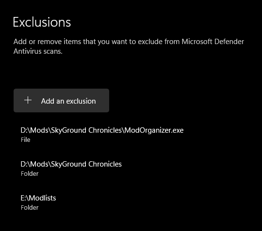

SYSTEM REQUIREMENTS
- SkyGround Chronicles only supports English Steam versions of full Skyrim AE. GOG and other languages are not supported.
- HDD and external SSD installs are absolutely not supported.
- Any remote PC / desktop services or apps are not supported. (Including Steam Link)
- Only Windows 10/11 operating systems are supported. Windows LTSC, special variants, lightened editions or any other modified variant WILL NOT WORK.
- At least 8GB of GPU VRAM minimum is recommended for the list (1080p), otherwise you'll experience frequent stutters in exteriors. Higher resolutions may require even more.

PRE-INSTALLATION
DO NOT downgrade your game.
General Utilities
Before installing SkyGround Chronicles, please inatll ".NET" is a free, cross-platform, open-source developer platform for building many different types of applications. This is required for Synthesis and Scrambled Bugs to function properly.
.NET SDK
Microsoft Visual C++ Redistributable
Steam Overlay
The Steam Overlay is known to cause issues while playing Skyrim Special Edition and should be disabled.
Load Steam
Click Steam in the top toolbar
Open Settings
Select the In-Game tab
Disable Enable the Steam Overlay while in-game
Antiviruses
Remove or disable any 3rd party antiviruses such as Webroot or Bitdefender. These programs can cause issues with your installation due to how MO2's Virtual File Staging works. You’ll also need to add the Wabbajack list folder to your antivirus exclusion list. Otherwise, the game may have trouble loading scripts, which can lead to crashes.
Wabbajack Installation
Something
Post-Installation
Something
Updating the Modlist
Something
Removing the Modlist
Something
Credits and Thanks
Something